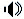

Welcome to the home page for the Elision (\i-ˈli-zhən\ ) rewriter.
Elision is a term rewriting library and REPL. It is under construction, so set your expectations accordingly.
The rewriter's initial feature set is stable, but the code itself is still undergoing testing. The documentation is incomplete, but what's there should be accurate. If you find problems, either with the rewriter or with the documentation, please check the issue tracker and possibly file a new issue.
More information is available from the links below.
| Current Build (Updates every four hours when there are changes): | |
| get: | [ Distribution
| Runnable Jar (Scala)
| Runnable Jar (Java)
| Elision on github
] |
| read: | [ README
| Wiki
| Documentation (PDF)
| Scala API (Scaladoc)
] |
| stats: | [ Statistics
| Last Build Output
] |
| collaborate: | [ elision-dev on Google Groups
] |
To run Elision you must have Java (1.7 or later) installed. To build Elision you must have Scala and Apache Ant installed.
Elision is built and tested on Linux and Mac OS X using Java 1.7 and Scala 2.10.1.
To use the runnable jar (for Scala), execute it with the scala command:
scala elision.jar
To use the runnable jar (for Java), execute it with the java command:
java -jar elision-all.jar
Thanks to Headway Software for providing licenses for structure101.
Most Recent Commits on GitHub (Click to show/hide.)
Elision is Copyright © @YEAR@ by UT-Battelle, LLC, all rights reserved. Elision is distributed under the terms of the BSD "two clause" license. Last updated: @TODAY@ at @TSTAMP@.